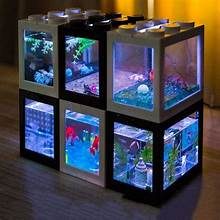

Eksplorasi Dunia Ikan Cupang
Kenali keindahan, ragam, dan cara merawat ikan cupang dengan mudah dan menyenangkan di Betta Aquatic.
Jenis Ikan Cupang Populer
Halfmoon
Sirip membentuk setengah lingkaran, sangat elegan dan memukau.
Crowntail
Sirip bergerigi seperti mahkota, penuh warna dan karakter.
Plakat
Badan kekar, sirip pendek, sering jadi jagoan kontes.
Tips Perawatan Cupang
Air Bersih
Ganti air 2-3 hari sekali, gunakan air yang sudah diendapkan.
Pakan Sehat
Berikan pakan hidup atau pelet khusus agar warna cerah.

Lingkungan Nyaman
Akuarium kecil tanpa arus, tambahkan tanaman air.
Galeri Cupang
Tentang Betta Aquatic
Betta Aquatic adalah komunitas digital untuk para pecinta ikan cupang di Indonesia. Kami hadir untuk berbagi inspirasi, edukasi, dan galeri keindahan cupang dari seluruh nusantara.